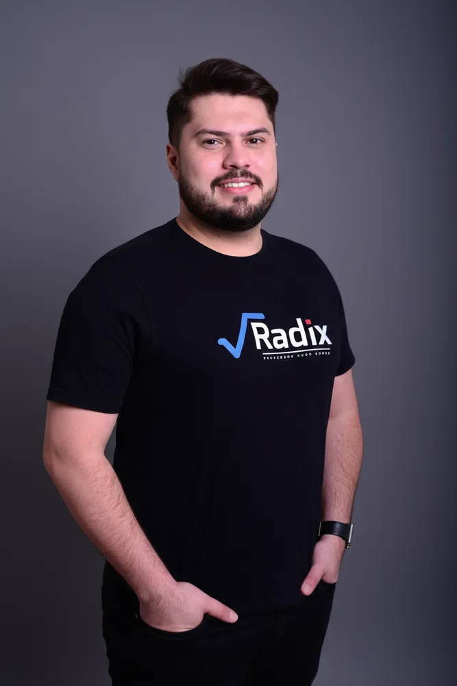
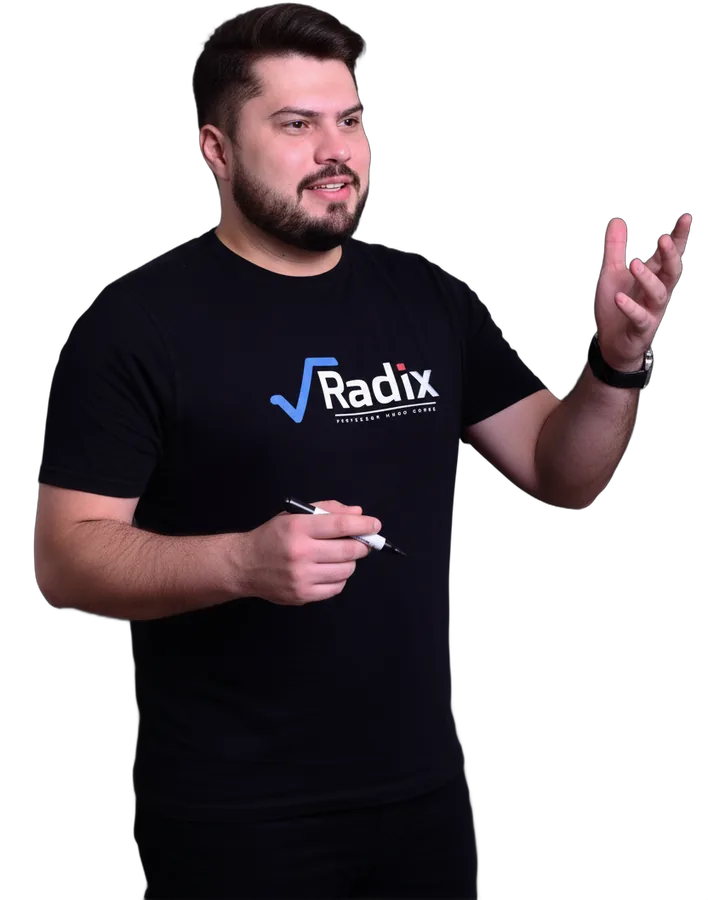

ponto a ponto,até o seu sonho
A nota do ENEM se constrói ponto a ponto. O Radix mostra qual é o seu próximo.
Vídeo-aulas com o Prof. Hugo Gomes e uma plataforma que mostra o que estudar, onde você erra e qual seria a sua nota hoje. O ano inteiro, do básico à Revisão Final.
A compra pelo site está indisponível agora. Fale com o atendimento pelo WhatsApp.
A compra é feita no checkout da Lumen IO.

O ponto de partida
Quem sabe o que cai estuda menos no escuro
O curso não segue a ordem do livro. Segue a prova. O Prof. Hugo levantou, uma a uma, as 45 questões de Matemática de 17 aplicações do ENEM. Esse levantamento decide a ordem das aulas, o peso das listas e a dose da revisão.
Mais tempo no que mais cai
Razão e Proporção, Estatística e Geometria recebem mais aulas, mais listas e voltam na revisão.
Questão de prova desde a primeira aula
Cada assunto termina em questões do ENEM, não em exercício de fixação solto.
A revisão chega na hora certa
Os assuntos de maior peso ficam para o fim do ano, frescos na memória no dia da prova.
A plataforma Radix
A aula acaba. A plataforma continua com você.
Todo aluno do curso online recebe acesso à plataforma do Radix. Ela foi construída pelo próprio professor para o ENEM e é onde o estudo da semana acontece.
Mais de 1.600 questões oficiais, filtradas do jeito que você precisa
Todas as provas do ENEM de 2009 a 2025, regulares e PPL, organizadas por assunto e nível. Você escolhe o tema, resolve e vê a resolução comentada.
- Filtro por assunto, prova, ano e dificuldade
- Resolução comentada passo a passo
- Monte suas próprias listas e baixe em PDF
Faça a prova oficial e veja a nota que o INEP daria
Você resolve um caderno real do ENEM, marca o gabarito e a plataforma calcula sua nota pelo mesmo modelo de TRI usado na correção oficial. Não é estimativa por número de acertos.
- Nota na escala do ENEM, com acertos e tempo de prova
- Chance de acerto em cada questão: veja onde a TRI te pune
- Refazer as erradas com um clique
Cada erro vira revisão, não esquecimento
Errou? A questão vai para o seu caderno de erros com o motivo: conceito, cálculo ou interpretação. Na véspera, você revisa só o que é seu.
- Registro em lote direto do resultado do simulado
- Categoria do erro para enxergar o padrão
- Refazer e acompanhar se o erro deixou de acontecer
Você sabe, assunto por assunto, onde está
A plataforma cruza tudo o que você resolveu e mostra seu acerto em cada assunto, a evolução no tempo e onde ainda falta prática. O professor vê o mesmo painel e sabe quem precisa de atenção.
- Acerto por assunto e por período
- Alertas de pouca prática e dificuldade recorrente
- Acompanhamento do professor com base nos seus dados
Nas últimas semanas, um plano de revisão só seu
Antes do ENEM, você responde a um diagnóstico de 8 minutos e recebe a Revisão Final: sete semanas, 420 questões e mini-simulados, distribuídos pelo seu nível, pela sua meta e pelo tempo que você tem. Já vem incluída no curso.
- Plano que cabe nas horas que você marcou
- A carga sobe onde você erra e cai onde já domina
- Mini-simulado semanal com gabarito na plataforma
Por que confiar na nota
A conta foi conferida com 60 mil candidatos reais do ENEM 2025
O cálculo da plataforma usa os parâmetros oficiais de cada questão, publicados pelo INEP. Comparamos a nota da plataforma com a nota oficial de 60 mil participantes do ENEM 2025 em Matemática.
Cronograma do ano
Semana a semana, com a aula, o material e as questões de cada assunto.
Vídeo-aulas e PDFs
Teoria e resolução de questões para rever quando quiser, no celular ou no computador.
Minhas listas
Monte listas com as questões que escolher e imprima para resolver no papel.
Professor de olho
O Prof. Hugo acompanha pelo painel quem parou de estudar ou travou num assunto.
O curso
Toda a Matemática do ENEM em cinco módulos
Uma aula por semana, de fevereiro a novembro. Os conteúdos que sustentam os outros vêm primeiro; a Revisão Geral fecha o ano com os assuntos de maior peso.
MÓDULO 01
Aritmética e Proporção
A base de quase metade da prova.
- Sistema métrico
- 4 operações
- Lógica
- Múltiplos e divisores
- Razão e proporção
- Porcentagem
- Gráficos e tabelas
MÓDULO 02
Geometria
Plana, espacial, analítica e trigonometria.
- Geometria plana
- Trigonometria no triângulo
- Geometria espacial
- Geometria analítica
MÓDULO 03
Funções e Progressões
Do 1º grau à matemática financeira.
- Conjuntos
- Função do 1º e 2º grau
- Potências e raízes
- Exponencial e logaritmo
- Funções trigonométricas
- PA e PG
- Financeira
MÓDULO 04
Estatística e Matrizes
Contagem, chance e leitura de dados.
- Análise combinatória
- Probabilidade
- Estatística
- Matrizes
- Sistemas lineares
MÓDULO 05
Revisão Geral
Sete semanas antes da prova, com plano personalizado na plataforma.
- 4 assuntos + geometria por semana
- Mini-simulado semanal
- Retorno dos assuntos de maior peso
AO LONGO DO ANO
Simulados
Provas oficiais com nota TRI e simulados da plataforma para medir a evolução.
- Nota na escala do ENEM
- Relatório por questão
Como é a semana
A semana de quem estuda online
Aula do assunto
Teoria direta e questões do ENEM resolvidas pelo professor, em vídeo-aula.
Lista na plataforma
As questões da semana ficam no app, com resolução comentada para conferir.
Erros no caderno
O que você errou fica registrado com o motivo, pronto para a revisão.
Desempenho atualizado
Seu acerto por assunto muda e o professor vê quem precisa de ajuda.

O professor
Quem dá a aula também construiu a plataforma
O Prof. Hugo Gomes fundou o Radix em Mossoró. Ele leva para a aula o que aprendeu analisando cada prova do ENEM e levou o mesmo cuidado para a plataforma. O banco, a nota TRI e o plano de revisão foram pensados por ele, para os alunos dele.
Matrícula 2027
Radix Matemática Online 2027
O curso online anual do Radix Matemática. Pagamento único, sem mensalidade.
Online
De onde você estiver
Pelo celular ou computador
R$ 497,00pagamento único · PIX ou cartão de crédito em até 10×
A compra pelo site está indisponível agora. Fale com o atendimento pelo WhatsApp.
- Vídeo-aulas de teoria e resolução
- Estude no seu horário
- Acesso completo à plataforma
- Revisão Final incluída
Você vai para o checkout da Lumen IO. Lá você cria a conta de quem vai pagar, informa os dados do aluno e escolhe PIX ou cartão.
Depois do pagamento
- A confirmação aparece na tela e chega por e-mail.
- O Radix libera o seu acesso ao curso online.
- Você acompanha a compra na sua conta da Lumen IO.
Prefere a turma presencial em Mossoró?
A matrícula da turma presencial é feita com o atendimento. Black Friday até 30/11. Presencial em Mossoró + online, de R$ 2.800 por R$ 1.920.
Falar no WhatsAppO curso inclui o banco com mais de 1.600 questões oficiais, simulados com nota TRI, caderno de erros, painel de desempenho, minhas listas e a Revisão Final personalizada.
Dúvidas
Perguntas frequentes
É mensalidade?
Não. É um pagamento único de R$ 497,00, no PIX ou em até 10× no cartão de crédito.
Como faço a matrícula?
Toque em Garantir minha vaga. Você vai para o checkout da Lumen IO, onde o curso aparece como Radix Matemática Online 2027, com o professor Antônio Hugo Diniz Gomes. Lá você cria a conta de quem vai pagar, informa os dados do aluno e escolhe PIX ou cartão. Se o aluno for menor de idade, a conta fica no nome do pai, da mãe ou do responsável.
O que acontece depois que eu pago?
A confirmação aparece na tela e chega por e-mail. O Radix libera o seu acesso ao curso online. Se precisar de ajuda, fale com o atendimento pelo WhatsApp (84) 99813-1870.
O curso serve para quem tem muita dificuldade em Matemática?
Sim. O primeiro módulo começa pela base (operações, proporção, porcentagem), que é justamente o que mais cai. No banco, você filtra por nível e começa pelas questões básicas.
Já sei a base. Vale a pena?
Vale. O simulado com TRI mostra exatamente quais questões fáceis você ainda erra, que são as que mais derrubam a nota, e o painel de desempenho aponta os assuntos que estão custando pontos.
A plataforma funciona no celular?
Funciona pelo navegador, no celular ou no computador, sem instalar nada.
A Revisão Final é cobrada à parte?
Não. Ela está incluída no curso.
ENEM 2027
ponto a ponto, até o seu sonho
Garanta sua vaga e comece 2027 com aula, banco de questões, nota TRI e um professor acompanhando de perto.
